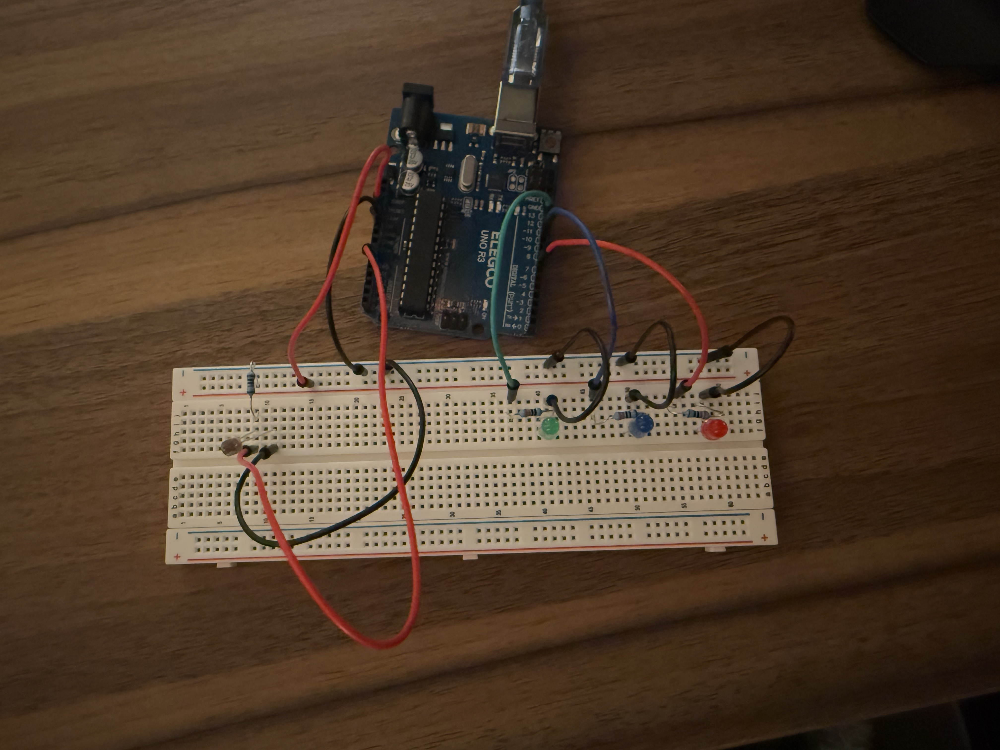
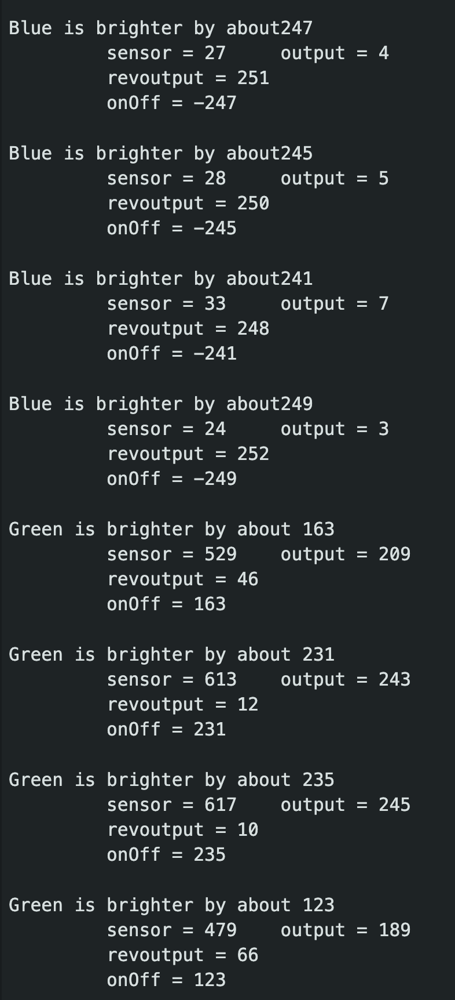

For the circuit, I chose to use Red, Blue and Green LEDs. I used a resistance of 220 ohms for each LED because after doing the calculations, I found that the maximum Resistance I would need is 160 ohms. 220 was the closest standard resistance value.
For the photoresistor, I used a 10k ohm resistor because I was in a bright room and I wanted to make sure that the photoresistor would work in a bright room.
At the photoresistor, I would be able to read values ranging from 0.455 volts (When there is no light) to 4.55 volts (When there is light).

This is the gif for the circuit

This is the example output from the serial monitor
// Analog Pin to read the photoresister value
const int analogInPin = A0;
// Pin for Green LED
const int green = 11;
// Pin for Blue LED
const int blue = 10;
// Pin for Red LED
const int red = 7;
//Inioialize the variables
int sensorValue = 0; // value read from the photoresister
int outputValue = 0; // value output to the PWM (analog out)
int revOutputValue = 0; // Value out for the reverse PWM
void setup() {
// Setting the pin modes
pinMode(green, OUTPUT);
pinMode(blue, OUTPUT);
pinMode(red, OUTPUT);
pinMode(analogInPin, INPUT);
// initialize serial communications at 9600 bps:
Serial.begin(9600);
}
void loop() {
// Read the sensor value
sensorValue = analogRead(analogInPin);
// map it to the range of the analog out:
// I chose these values because in my environment
// 15 was the lowest I could achieve
// 630 was the highest I could achieve
outputValue = map(sensorValue, 15, 640, 0, 255); // Corresponds to the Green LED
revOutputValue = map(sensorValue, 15, 640, 255, 0); // The revered value for the BLue LED
// Calculate the difference between the two values
int onOff = outputValue - revOutputValue;
// change the analog out value:
analogWrite(green, outputValue);
analogWrite(blue, revOutputValue);
// If the difference is positive then Green LED is brigther
// and turn off the Red LED
// If the difference is negative then Blue LED is brighter
// and turn on the Red LED
if (onOff > 0) {
digitalWrite(red, LOW);
Serial.print("Green is brighter by about ");
Serial.println(outputValue-revOutputValue);
} else {
digitalWrite(red, HIGH);
Serial.print("Blue is brighter by about");
Serial.println(revOutputValue-outputValue);
}
// print the results to the Serial Monitor:
Serial.print("\t sensor = ");
Serial.print(sensorValue);
Serial.print("\t output = ");
Serial.println(outputValue);
Serial.print("\t revoutput = ");
Serial.println(revOutputValue);
Serial.print("\t onOff = ");
Serial.println(onOff);
Serial.println();
// One second delay to make the serial print readable
delay(1000);
}